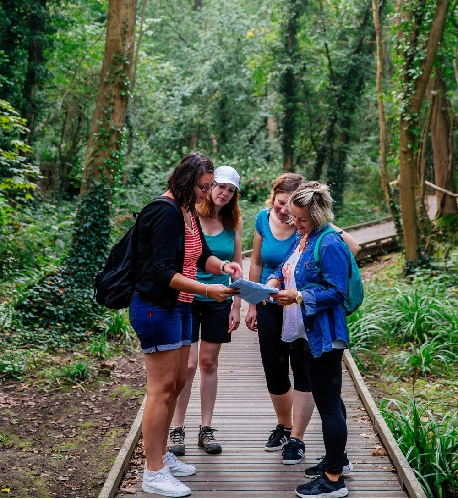
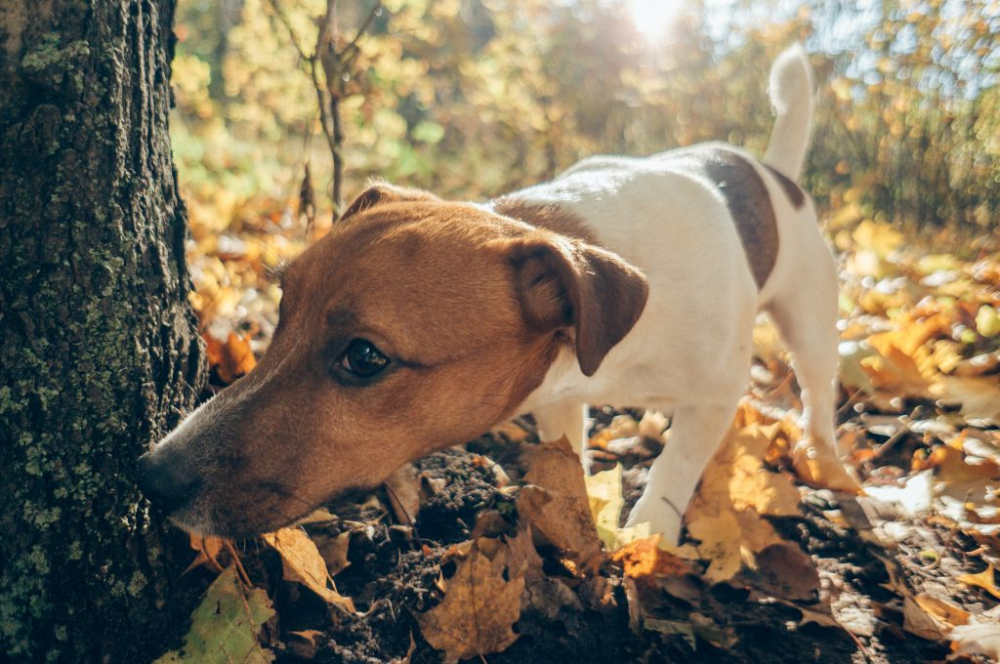

NAMA
Naš tim čine iskusni vodiči i njihovi vjerni četveronožni partneri, psi posebno obučeni za pronalazak tartufa (a ponekad i svinje, za one koji vole retro šarm). Ako želite upoznati naše dlakave eksperte i osjetiti čaroliju tartufarskog lova, pridružite nam se!

